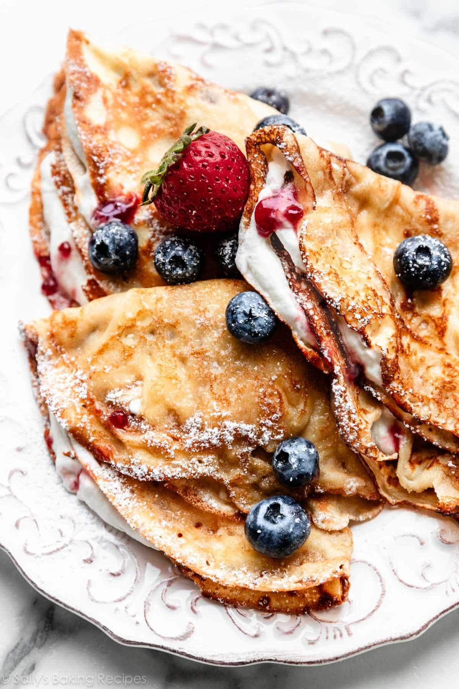

Croissant
 The croissant, a crescent-shaped pastry, is a beloved breakfast staple and a symbol of French culinary culture. It's made from a yeast-leavened, laminated dough that's folded and rolled numerous times, creating hundreds of thin, buttery layers. The resulting pastry is crisp on the outside and soft and flaky on the inside. Croissants are often enjoyed plain, but they can also be filled with sweet or savory ingredients like chocolate, ham, or cheese.
The croissant, a crescent-shaped pastry, is a beloved breakfast staple and a symbol of French culinary culture. It's made from a yeast-leavened, laminated dough that's folded and rolled numerous times, creating hundreds of thin, buttery layers. The resulting pastry is crisp on the outside and soft and flaky on the inside. Croissants are often enjoyed plain, but they can also be filled with sweet or savory ingredients like chocolate, ham, or cheese.
Creme Brelee
 Crème brûlée, a classic French dessert, consists of a rich custard base topped with a layer of hard caramel. The custard is typically made from cream, egg yolks, and sugar, and is flavored with vanilla or other ingredients. The top layer is caramelized using a torch or broiler, creating a contrast between the creamy custard and the crunchy caramel. It's often served in individual ramekins and is known for its elegant presentation.
Crème brûlée, a classic French dessert, consists of a rich custard base topped with a layer of hard caramel. The custard is typically made from cream, egg yolks, and sugar, and is flavored with vanilla or other ingredients. The top layer is caramelized using a torch or broiler, creating a contrast between the creamy custard and the crunchy caramel. It's often served in individual ramekins and is known for its elegant presentation.
Macaron
Macarons are delicate French confections made from almond flour, egg whites, and sugar. They are characterized by their smooth, shiny shells and chewy texture. Macarons come in a variety of flavors and colors, often filled with ganache, buttercream, or jam. These delightful treats are popular for their vibrant appearance and exquisite taste, making them a favorite among pastry lovers worldwide.
Eclairs
Éclairs are elongated pastries made from choux pastry, filled with cream, and topped with chocolate icing. The dough is piped into long shapes and baked until golden brown. Once cooled, they are filled with pastry cream or whipped cream and glazed with chocolate. Éclairs are a popular French dessert known for their light, airy texture and rich flavors.
They can also be made with various fillings, such as coffee or fruit-flavored creams.
Mille fuille
 Mille-feuille, also known as Napoleon, is a classic French pastry made of layers of puff pastry and pastry cream. The name "mille-feuille" translates to "a thousand leaves," referring to the many layers of flaky pastry. Traditionally, it consists of three layers of pastry and two layers of cream, often topped with a glaze or powdered sugar. Variations may include fruit or chocolate fillings, making it a versatile and elegant dessert.
Mille-feuille is known for its delicate texture and rich flavors, making it a favorite in French patisseries.
Mille-feuille, also known as Napoleon, is a classic French pastry made of layers of puff pastry and pastry cream. The name "mille-feuille" translates to "a thousand leaves," referring to the many layers of flaky pastry. Traditionally, it consists of three layers of pastry and two layers of cream, often topped with a glaze or powdered sugar. Variations may include fruit or chocolate fillings, making it a versatile and elegant dessert.
Mille-feuille is known for its delicate texture and rich flavors, making it a favorite in French patisseries.
Profiteroles
Profiteroles are small, round pastries made from choux pastry, typically filled with cream and topped with chocolate sauce. The dough is piped into small balls and baked until golden brown. Once cooled, they are filled with whipped cream, pastry cream, or ice cream. Profiteroles are often served as a dessert or as part of a dessert platter and can be arranged in a tower for an impressive presentation.
They are a popular treat in French cuisine and are known for their light, airy texture and rich flavors.
Pain au chocolate
 Pain au chocolat, also known as chocolate croissant, is a French pastry made from a buttery, flaky dough filled with dark chocolate. It is similar to a croissant but is shaped into a rectangular form with chocolate pieces tucked inside. The dough is laminated, creating layers that become crisp and golden when baked. Pain au chocolat is often enjoyed for breakfast or as a snack and is a popular choice in French bakeries.
The combination of the rich chocolate filling and the flaky pastry makes it a delightful treat for chocolate lovers.
Pain au chocolat, also known as chocolate croissant, is a French pastry made from a buttery, flaky dough filled with dark chocolate. It is similar to a croissant but is shaped into a rectangular form with chocolate pieces tucked inside. The dough is laminated, creating layers that become crisp and golden when baked. Pain au chocolat is often enjoyed for breakfast or as a snack and is a popular choice in French bakeries.
The combination of the rich chocolate filling and the flaky pastry makes it a delightful treat for chocolate lovers.
Madeleines
Madeleines are small, shell-shaped sponge cakes that are a classic French treat. They are made from a batter of flour, sugar, eggs, and butter, often flavored with lemon or almond. The batter is poured into special madeleine molds and baked until golden brown. Madeleines are known for their light, airy texture and delicate flavor, making them a popular choice for tea time or as a dessert.
They are often enjoyed plain or dusted with powdered sugar and can be served warm or at room temperature.
Madeleines are also famous for their association with Marcel Proust's novel "In Search of Lost Time," where they evoke memories of childhood.
Creps

Crêpes are thin, flat pancakes that originated in France. They can be sweet or savory and are made from a simple batter of flour, eggs, milk, and butter. Sweet crêpes are often filled with ingredients like Nutella, fruit, or whipped cream, while savory crêpes may contain cheese, ham, or vegetables. Crêpes are cooked on a hot griddle or skillet until lightly browned and can be folded or rolled with various fillings.
They are a versatile dish enjoyed for breakfast, lunch, or dessert and are often served with a dusting of powdered sugar or a drizzle of sauce.
Crêpes are a popular street food in France and are often enjoyed at fairs and markets.
They can also be made at home and customized with a wide range of fillings and toppings.
Creme caramal
 Crème caramel, also known as flan or caramel custard, is a classic dessert made from a smooth custard base topped with a layer of caramel sauce. The custard is typically made from eggs, sugar, and milk or cream, and is baked in a water bath to ensure even cooking. Once cooled, the dessert is inverted onto a plate, allowing the caramel to flow over the custard.
Crème caramel is known for its creamy texture and rich flavor, making it a popular choice in French cuisine and beyond.
It can be served plain or garnished with fresh fruit or whipped cream for added flavor and presentation.
This dessert is often enjoyed in restaurants and is a favorite among those who appreciate classic French desserts.
Crème caramel, also known as flan or caramel custard, is a classic dessert made from a smooth custard base topped with a layer of caramel sauce. The custard is typically made from eggs, sugar, and milk or cream, and is baked in a water bath to ensure even cooking. Once cooled, the dessert is inverted onto a plate, allowing the caramel to flow over the custard.
Crème caramel is known for its creamy texture and rich flavor, making it a popular choice in French cuisine and beyond.
It can be served plain or garnished with fresh fruit or whipped cream for added flavor and presentation.
This dessert is often enjoyed in restaurants and is a favorite among those who appreciate classic French desserts.